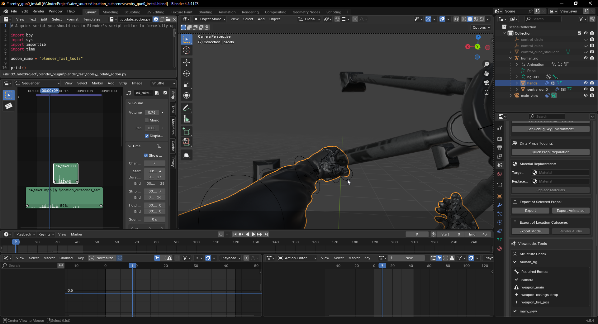
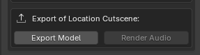
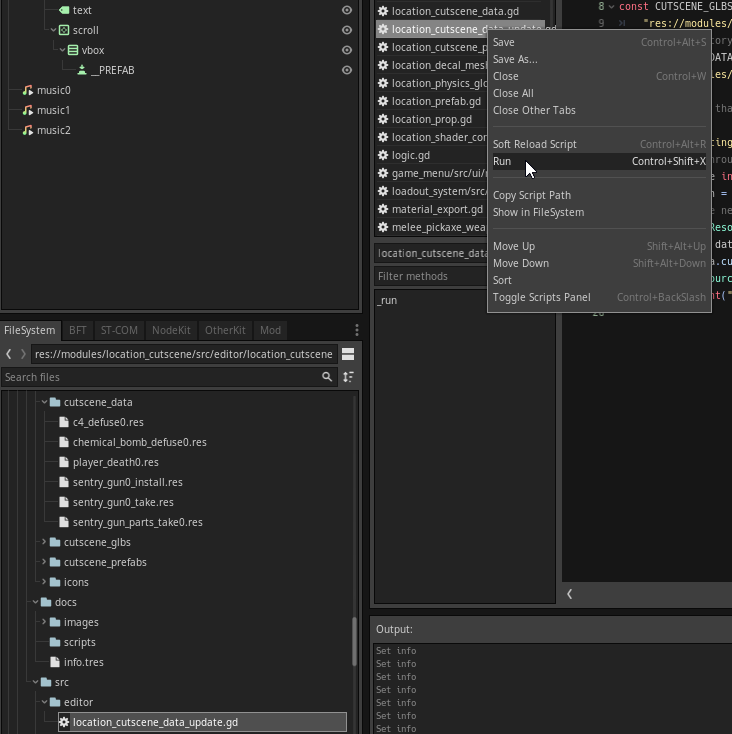
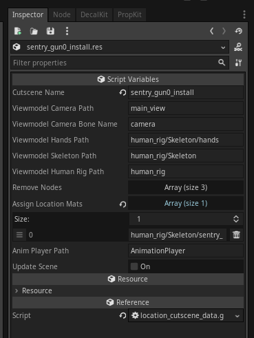
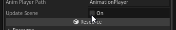
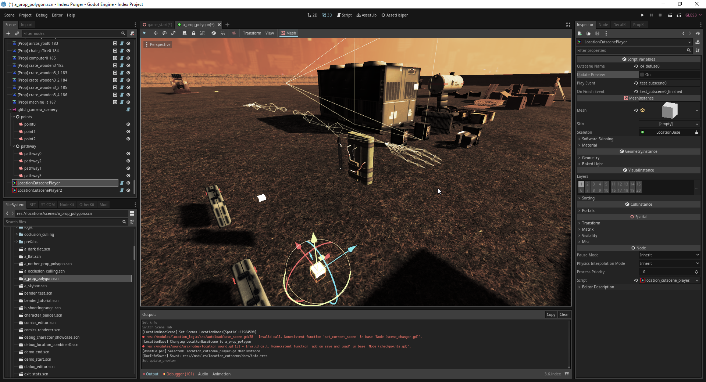

Module: location_cutscene
Documentation last edited: November 10, 2025 at 18:40 UTC
Description


Наконец-то способ добавить анимации к интерактивным объектам. Обезвреживание C4? Обезвреживание химической бомбы? Установка турели? Вот для чего эта штука. Она реализует так называемые "катсцены" в форме ноды
LocationCutscene
.
Экспорт катсцены, сделанной в Blender
0. Сделай катсцену в Blender'е с помощью своих анимационных навыков.

"res://.dev_sources/location_cutscenes"
. Это может спасти тебе жизнь.
1. Найди кнопку экспорта катсцены локации в панели BlenderFastTools.

2. Обнови папку данных катсцен локации, запустив редакторский скрипт.

"location_cutscene_data_update.gd"
, кликни по нему Правой Кнопкой Мыши, в контекстном меню нажми "Run".
3. Настрой свой файл данных.


"res://modules/location_cutscene/assets/cutscene_data/"
Не все переменные нужно редактировать, если ты сделал всё "правильно". Например, если ты просто append'ил руки вьюмодели без особых изменений в названиях, оставив всё называться
"human_rig"
и
"hands"
, то система быстро определит руки вьюмодели.
"cutscene_name"
- Не трогай эту, она назначается автоматически и по умолчанию верна.
"viewmodel_camera_path"
- Путь к ноде основной камеры этой катсцены.
"viewmodel_camera_bone_name"
- Имя кости, к которой привязать основную камеру.
"viewmodel_hands_path"
- Путь к ноде меша рук вьюмодели.
"viewmodel_skeleton_path"
- Путь к ноде скелета вьюмодели.
"viewmodel_human_rig_path"
- Путь к ноде
"human_rig"
.
"remove_nodes"
- Массив путей к нодам, которые будут удалены во время обновления сцены.
"assign_location_mats"
- Массив путей к нодам мешей, которым нужно назначить материал локации.
"anim_player_path"
- Путь к ноде
AnimationPlayer
.
"update_scene"
- Булева кнопка, которая обновляет сцену при нажатии.
В этом бардаке не нужно менять всё, чтобы правильно настроить катсцену.
Скорее всего, тебе понадобится изменить
"assign_location_mats"
*в случае*, если в твоей катсцене есть пропы с материалом локации. Иначе тебе придётся настраивать материалы вручную в папке GLB (
"res://modules/location_cutscene/assets/cutscene_glbs/"
).
4. Обнови файл сцены.

5. Используй свою катсцену!
Использование катсцен
Есть 2 метода:
- Использовать
LocationCutscenePlayer
- Проигрывать катсцену самостоятельно в коде
LocationCutscenePlayer

Эта нода поставляется с функцией предпросмотра, которая позволяет легко размещать катсцену в игровом мире. Всё ещё неудобна в использовании, но лучше, чем ничего.
- Измени имя катсцены в настройках.
- Определи некоторые события локации для начала проигрывания этой штуки.
- Та-да.
Проигрывание катсцены в коде
Простой пример:
# Создаём и настраиваем инстанс катсцены
var cutscene = LocationCutscene.create_cutscene("sentry_gun0_take")
add_child(cutscene) # Добавляем её как ребёнка *куда-нибудь*
cutscene.transform = Transform.IDENTITY
cutscene.play()
# Ждём окончания катсцены
yield(cutscene, "on_finish")
# Очистка
cutscene.queue_free()
Пример с игроком:
# Проигрываем катсцену
var player = PlayerData.get_player()
var cutscene = LocationCutscene.create_cutscene("sentry_gun0_take")
player.get_node("CameraHorizontal").add_child(cutscene)
cutscene.transform = Transform.IDENTITY
cutscene.rotation_degrees.y = 180.0
cutscene.position.y -= player.get_node("CameraHorizontal").position.y
cutscene.position.y += 0.2
cutscene.reset_physics_interpolation()
cutscene.play()
# Ждём окончания катсцены
yield(cutscene, "on_finish")
# Очистка
cutscene.queue_free()
General Information
Root directories list
assets, docs, src
Nodes
LocationCutscene
LocationCutscenePlayer
Classes
None